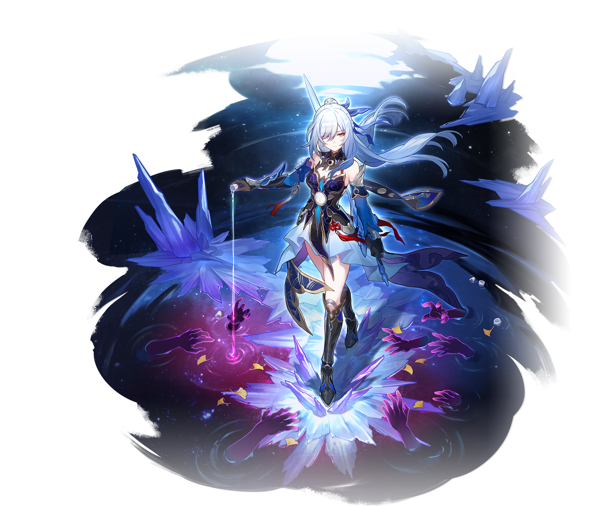

Fu Xuan
Jingliu
Topaz & Numby
Jingliu
Uma das heroínas lendárias do Quinteto das Nuvens, conhecida como "Clarão Transcendente".
Após superar os conceitos mortais de vitória, ela escolheu seguir um caminho diferente para obter o poder de matar deuses.
Depois disso, uma mestre da espada do Luofu foi apagada dos registros do Xianzhou, e uma traidora apagada dos anuários foi adicionada.
